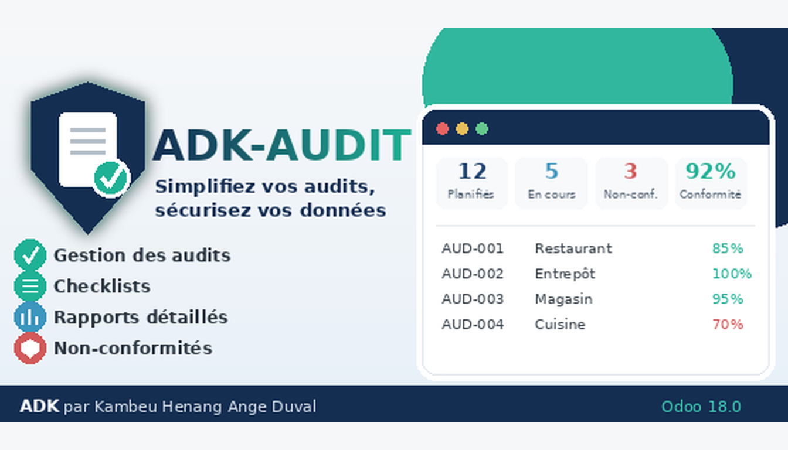

ADK-AUDIT is an Odoo 18 audit management module designed to structure internal and external audits, control points, findings, corrective actions and professional reporting.
ADK-AUDIT includes four distinct user roles. Each role is designed for a specific responsibility in the audit process. Please review the permissions below before purchasing.
Full access to ADK-AUDIT. The administrator can manage audit configuration and reference data, access all Business and QHSE audits, manage audit records and corrective actions, and access all dashboards and reports.
Access to Business audits only. The auditor can create and manage Business audit sessions, checklist items, findings, evidence and corrective actions. Reference data can be created and edited, but reference records cannot be deleted. QHSE audits are not accessible.
Access to QHSE audits only. The QHSE user can create and manage QHSE audit sessions, checklist items, findings, evidence and corrective actions. Reference data can be created and edited, but reference records cannot be deleted. Business audits are not accessible.
Read-only access to the findings and corrective actions assigned to the audited person. The audited user can review relevant anomalies, attached evidence and corrective-action information, but cannot create, modify or delete audit data.
The module integrates with Odoo's standard environment and uses the configured access rights and reporting mechanisms.
Developer: Kambeu Henang Ange Duval
Email: duvalkambeu61@gmail.com